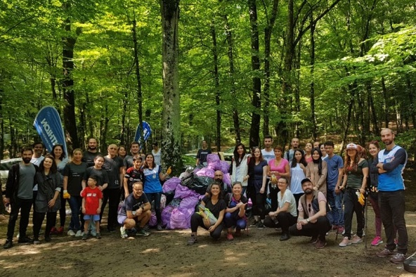

1 Şubat
Doğayı Temizleme Etkinliği 
Sabah 09.30'da Belgrad Ormanı girişinde toplanacağız, daha önce bisikletcilerimiz ve rehberlerimizin tesbit ettiği yerlerden, Sarıyer Belediyesinin verdiği amblemsiz çöp torbalarıyla toplanan çöpler, çöp arabasına konulup,ormanın, Bahçeköy girişinde biriktirilecek, oraya bir afiş asılıp üzerine katılımcıların isimleri alfabetik sırayla yazılıp, '' ormanda attığınız atıklar biz doğa severler tarafından toplandı'' ya benzer bir vurgulu cümle yazılacak.
Belgrad Ormanı, tüm bu özellikleriyle, omuzlarında taşıdığı ağır “ev sahibi” olma sorumluluğunu kusursuz bir şekilde yerine getirmiştir. Adeta yüce gönüllü bir baba gibi, İstanbul halkına ve ormanda yaşayan veya ormanı bir süreliğine ziyaret eden tüm canlı türlerine kol kanat gerdiği için, başta imparatorlar ve padişahlar olmak üzere tarih boyunca neredeyse tüm yönetciler ormana minnettar olmuştur. Bu nedenle sosyal ve ekonomik koşullar ne kadar ağır olursa olsun, ormanın doğal dokusuna zarar verecek bir girişimde bulunmak akıllarından dahi geçmemiştir. Nitekim Osmanlı döneminde hem sarayın, hem de halkın odun ihtiyacı büyük oranda Anadolu’dan karşılanmış, fakat şehrin yanı başındaki bu ormandan bir dal dahi çıkartılması düşünülmemiştir.